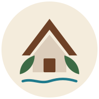
Los LaurelesCabañas · Licán RayLago Calafquén
Cabañas nuevas de madera en pleno balneario de Licán Ray, rodeadas de jardín y hortensias. Se deja el auto y se baja caminando al lago.
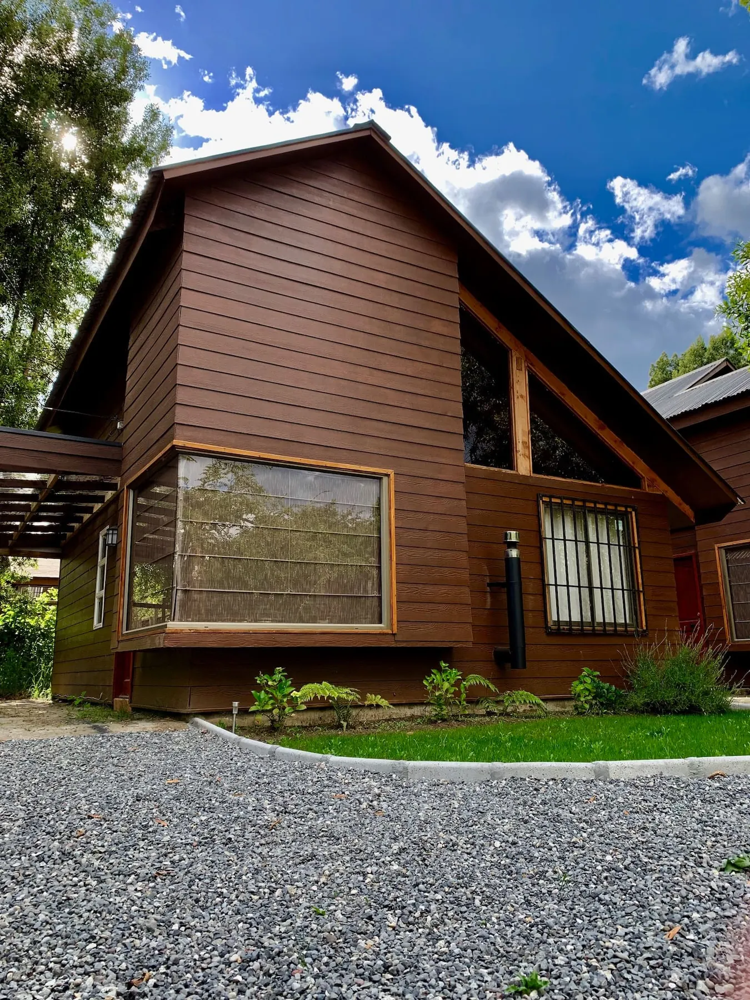
El lago
Licán Ray se recorre a pie: la Playa Grande, la costanera, los restoranes y el comercio están a minutos de su terraza.
La cabaña
Dos pisos de madera con vigas a la vista, cocina equipada y una pieza matrimonial con baño en suite. Calientitas con calefacción a pellet.
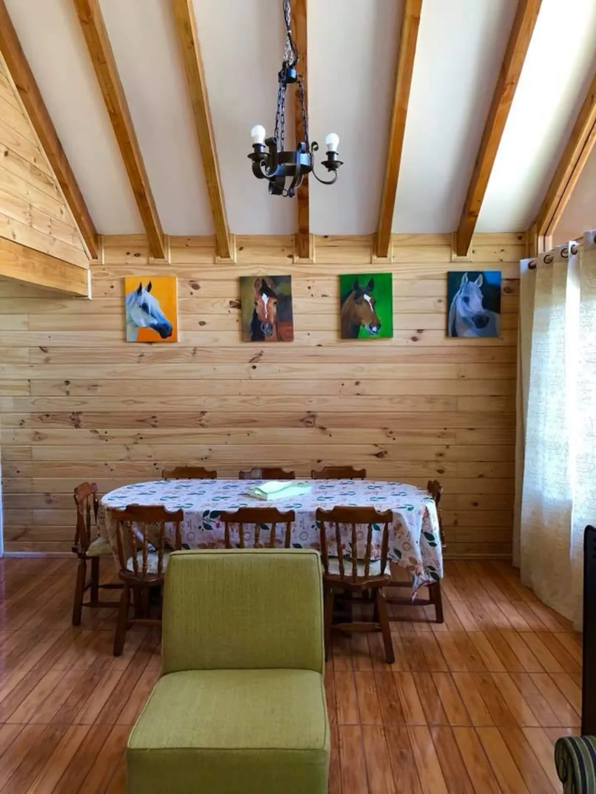
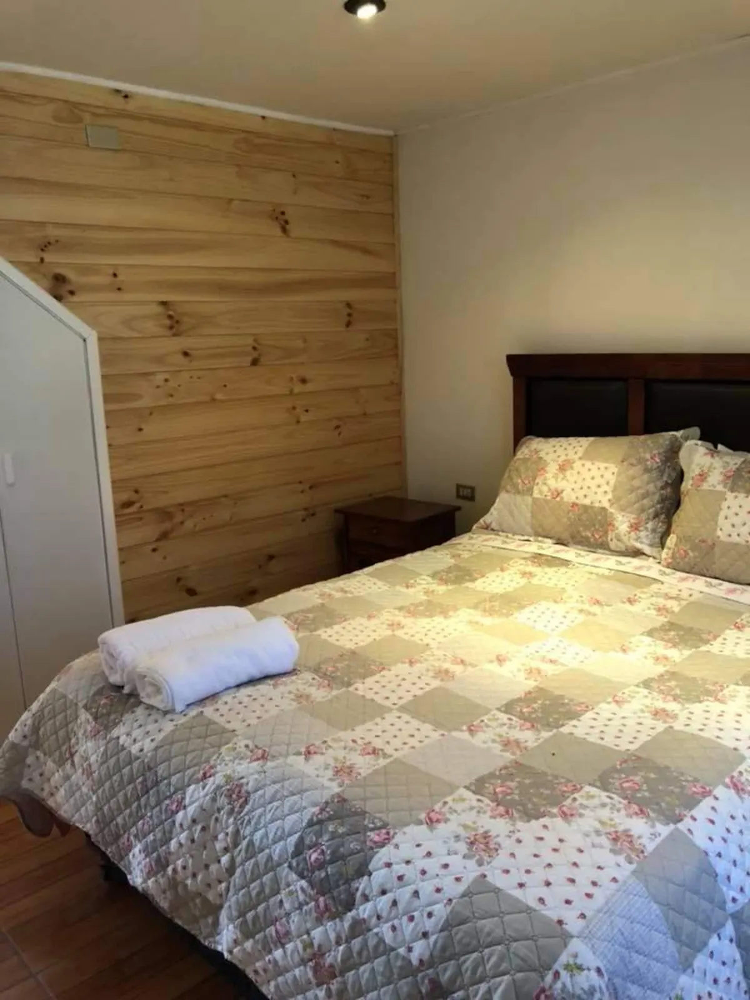
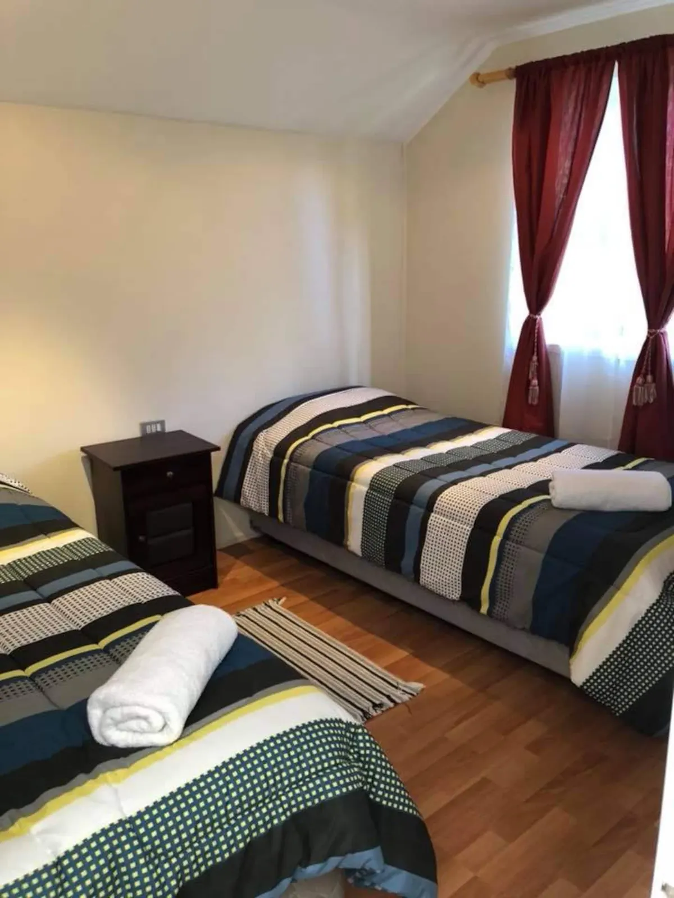
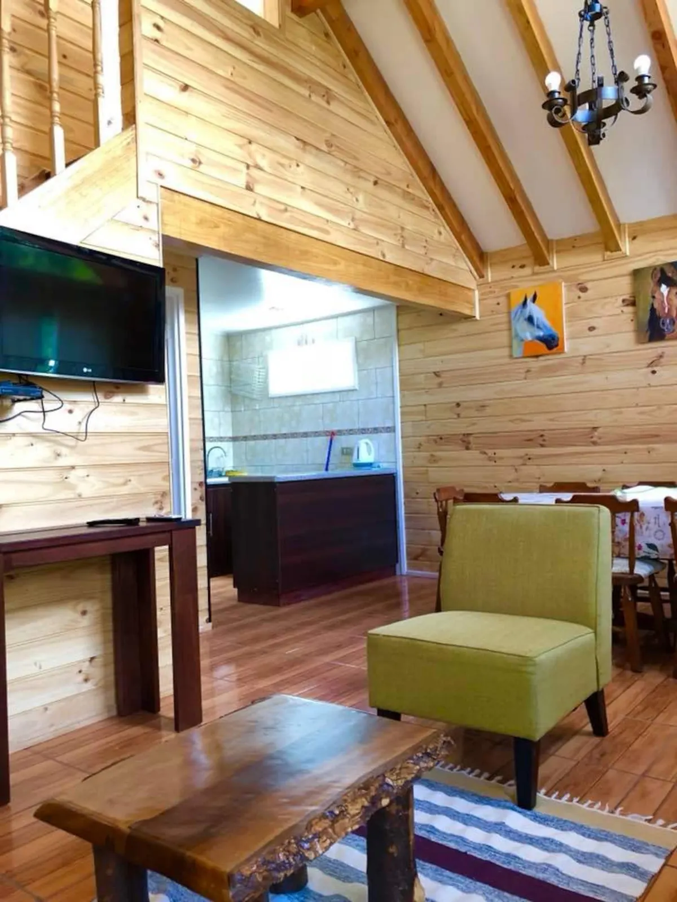
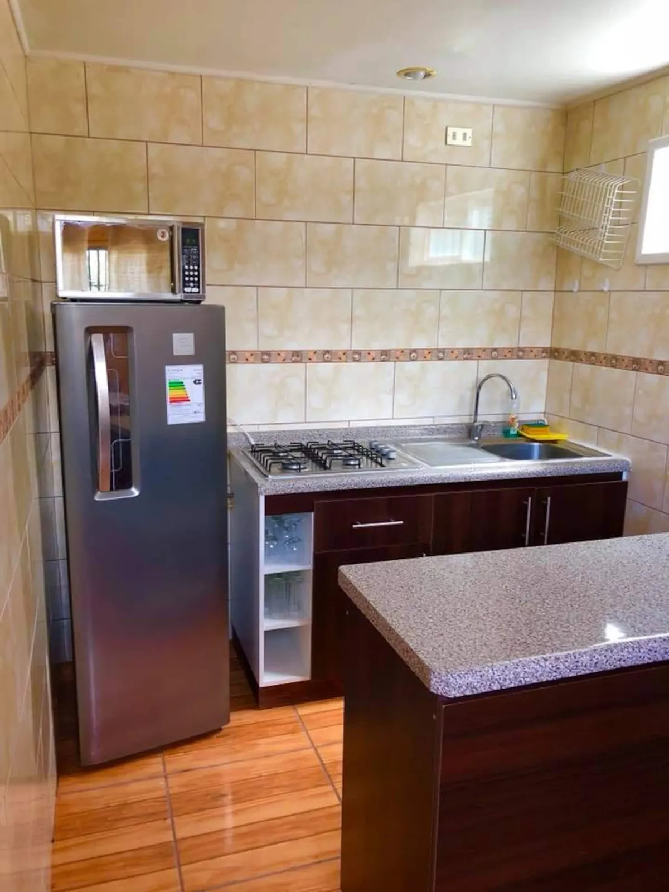
El jardín
Las cabañas están entre árboles y jardines cuidados, con senderos de maicillo y espacio para que los niños jueguen afuera.
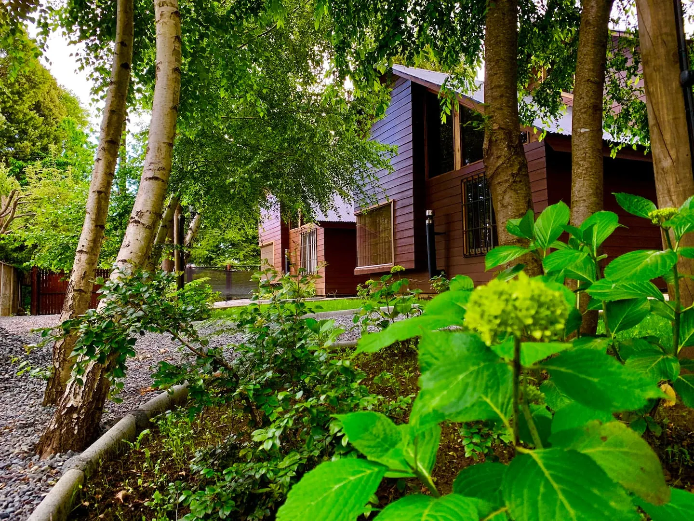
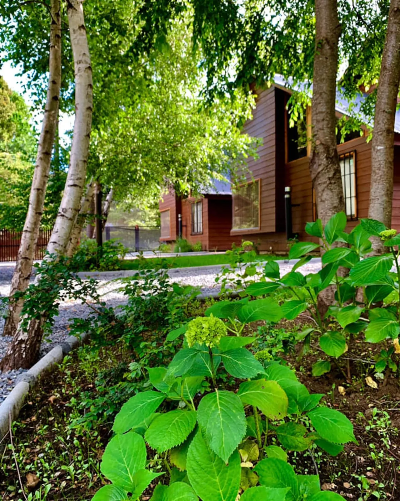
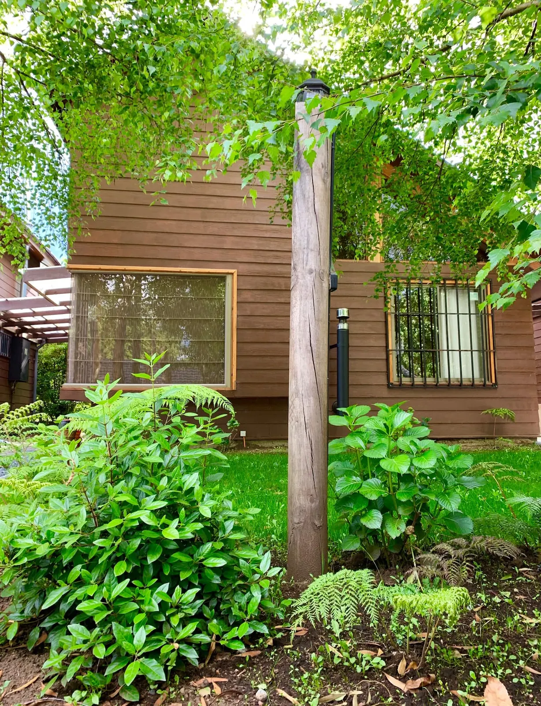
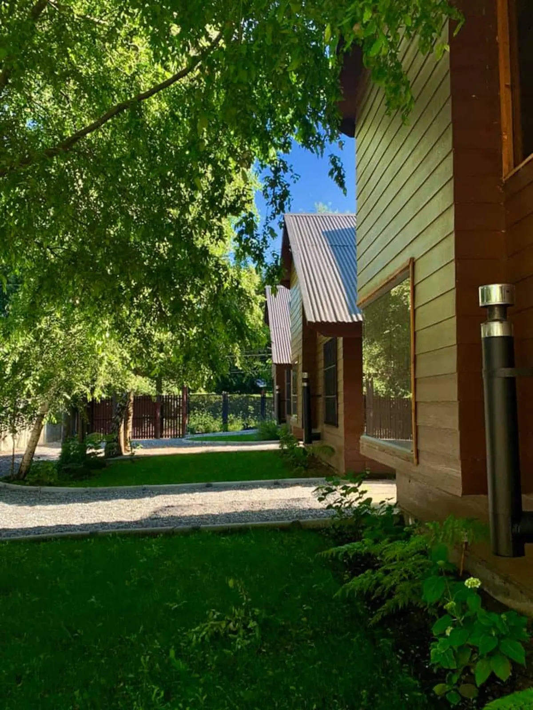
Reserve directo con nosotros: mejor tarifa, sin comisiones y respuesta personal por WhatsApp.
Escribir por WhatsAppBoceto preparado con las fotos públicas de Cabañas Los Laureles. En el sitio final van sus fotos (también del lago y la playa), textos y tarifas actualizadas.
Propuesta de Red Vaeru para Cabañas Los Laureles
Garantía de portada: primero ven su portada terminada. Si no les convence, no pagan nada. Si les gusta, firmamos contrato y pagan el 50% para comenzar.
Hablar con Jorge por WhatsApp Ver el portafolio de Red Vaeru ↗